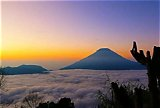

Deskripsi Destinasi
Jawa Tengah adalah provinsi yang terletak di bagian tengah Pulau Jawa
dengan Semarang sebagai ibu kotanya. Daerah ini dikenal sebagai pusat
budaya Jawa, dengan peninggalan sejarah, tradisi keraton, kerajinan
batik, hingga kuliner khas yang masih terjaga sampai sekarang.
Perpaduan pegunungan, pantai, dan pulau membuat Jawa Tengah cocok
untuk berbagai gaya liburan.
Salah satu ikon terbesarnya adalah Candi Borobudur di Magelang, candi
Buddha yang telah ditetapkan sebagai Warisan Dunia UNESCO. Bagi
pecinta alam, Dataran Tinggi Dieng menawarkan udara sejuk, telaga
berwarna, dan pemandangan matahari terbit yang indah. Sementara itu,
Kepulauan Karimunjawa di Jepara menyuguhkan laut jernih dan terumbu
karang untuk snorkeling serta diving.
Di wilayah perkotaan, wisatawan dapat menjelajahi bangunan kolonial di
Kota Lama Semarang dan Lawang Sewu, mengunjungi Keraton Surakarta di
Solo, atau mencicipi kuliner seperti lumpia Semarang, tahu gimbal, dan
nasi liwet. Jangan lewatkan kesempatan mengunjungi Jawa Tengah dan
membawa pulang kenangan tak terlupakan!
|
Destinasi Unggulan
|
1. Candi Borobudur (Magelang)
Candi Buddha dari masa Dinasti Syailendra yang dibangun
sekitar abad ke-8 hingga ke-9 dan ditetapkan sebagai
Warisan Dunia UNESCO pada tahun 1991. Bangunannya
bertingkat dengan stupa induk di puncak dan ribuan panel
relief yang menceritakan ajaran Buddha serta kehidupan
masyarakat pada masa itu. Waktu yang populer untuk
berkunjung adalah pagi hari saat matahari terbit.
|
|
2. Dataran Tinggi Dieng (Wonosobo & Banjarnegara)
Kawasan pegunungan dengan ketinggian sekitar 2.000 meter
di atas permukaan laut yang berhawa sejuk hingga dingin.
Di sini ada Telaga Warna yang airnya tampak
berwarna-warni, Kawah Sikidang, kompleks Candi Arjuna, dan
Bukit Sikunir yang terkenal dengan pemandangan matahari
terbitnya. Dieng juga dikenal lewat Dieng Culture Festival
dan tradisi ruwatan anak berambut gimbal.
|
|
3. Kepulauan Karimunjawa (Jepara)
Gugusan pulau di Laut Jawa yang menjadi kawasan taman
nasional laut. Wisatawan bisa snorkeling, diving, bermain
di pantai berpasir putih, dan melihat terumbu karang serta
berbagai ikan laut. Untuk ke sini, perjalanan ditempuh
dengan kapal dari Jepara, sehingga jadwal kapal perlu
dicek terlebih dahulu.
|
|
4. Kota Lama Semarang & Lawang Sewu (Semarang)
Kota Lama Semarang dipenuhi bangunan bergaya kolonial
Belanda, salah satunya Gereja Blenduk yang menjadi ikon
kawasan ini. Tidak jauh dari sana ada Lawang Sewu, bekas
kantor perusahaan kereta api masa kolonial yang namanya
berarti seribu pintu. Keduanya cocok untuk wisata sejarah,
fotografi, dan berjalan kaki santai.
|
|
5. Keraton Surakarta (Solo)
Keraton Surakarta Hadiningrat adalah pusat budaya Jawa
yang berdiri pada abad ke-18 dan masih menjaga adat serta
upacara tradisinya. Di dalamnya terdapat museum yang
menyimpan benda-benda bersejarah milik keraton. Setelah
berkeliling, kamu bisa mampir ke sentra batik di Solo dan
mencicipi kuliner seperti nasi liwet dan serabi.
|
|
6. Lokawisata Baturraden (Banyumas)
Kawasan wisata alam di lereng Gunung Slamet dengan udara
sejuk, hutan pinus, dan aliran air pancuran yang jernih.
Tempat ini cocok untuk bersantai bersama keluarga,
berjalan di area hutan, atau sekadar menikmati pemandangan
pegunungan.
|
|
Lokasi Destinasi
Berikut adalah lokasi Provinsi Jawa Tengah yang dapat Anda kunjungi:
|
Galeri Foto
Berikut adalah beberapa foto menarik dari Jawa Tengah:
 Candi Borobudur, Magelang
Candi Borobudur, Magelang
|

Telaga Warna, Dataran Tinggi Dieng
|
 Kepulauan Karimunjawa, Jepara
Kepulauan Karimunjawa, Jepara
|
|
|
Ingin Mengunjungi?
Jika Anda tertarik untuk mengunjungi Jawa Tengah, berikut beberapa
tips dan informasi penting:
-
Waktu terbaik untuk berkunjung adalah musim kemarau, sekitar bulan
Mei hingga September.
-
Bawa jaket tebal jika ke Dieng karena suhunya sangat dingin,
terutama pagi hari.
-
Untuk Karimunjawa, siapkan perlengkapan snorkeling dan cek jadwal
kapal lebih dulu.
- Cek aturan dan tiket resmi sebelum naik ke Candi Borobudur.
-
Hormati adat dan budaya lokal, terutama saat berkunjung ke candi
dan keraton.
Untuk informasi lebih lanjut, silakan hubungi agen perjalanan lokal
atau kunjungi situs resmi pariwisata Jawa Tengah.
|
|